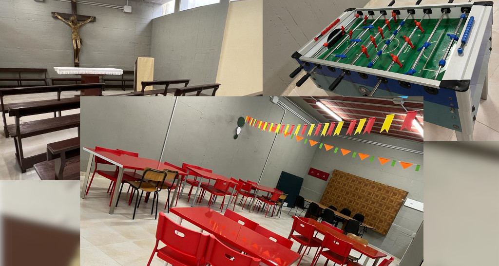

Benvenuto
Ti diamo il benvenuto nel sito della comunità cristiana della parrocchia Santa Maria in Campitelli a Grottaglie, in provincia di Taranto. Troverai qui le nostre esperienze e contenuti che ci aiutano a fare un cammino cristiano in comunità.
Ti diamo il benvenuto nel sito della comunità cristiana della parrocchia Santa Maria in Campitelli a Grottaglie, in provincia di Taranto. Troverai qui le nostre esperienze e contenuti che ci aiutano a fare un cammino cristiano in comunità.
| 1/12/2023 | Grest di Natale dal 27 al 30 dicembre e dal 2 al 5 gennaio |
| 1/12/2023 | Workshop Sposi dal 28 al 30 dicembre |
| Tutte le notizie | |
La messa domenicale è al centro della vita della Chiesa: lì incontriamo il Signore risorto, ascoltiamo la sua parola, ci nutriamo alla sua mensa e così diventiamo Chiesa.
| Lun-Mer | Gio | Ven-Sab | Festivi |
|---|---|---|---|
| 9:00 | 10:00 ¹ | ||
| 11:30 | |||
| 18:00 | 18:00 | 18:00 |
(1) Specialmente rivolta ai ragazzi del catechismo ed agli scout
Don Gianni 345 4248740
Il giovedì di Campitelli, al centro della settimana, vuole essere un luogo ed un tempo per fermarsi e ristorare l’anima nella cultura, nella formazione e nella spiritualità cristiana.
L’intento è nutrirsi alla sorgente del nostro essere cristiani per testimoniare con gioia fino alle periferie più lontane il nostro amore a Cristo e la bellezza del Vangelo.
Ci incontriamo tutti i giovedì dalle 18.00 alle 19.00.
Don Gianni 345 4248740
Lo scoutismo, è un movimento che ha come fine ultimo la formazione fisica, morale e spirituale della gioventù mondiale. Questo metodo educativo è fondato sul volontariato e sull’«imparare facendo» attraverso attività all’aria aperta e in gruppi. Offre ai giovani la possibilità di fare amicizia, vivere esperienze formative divertendosi ed incontrare Cristo attraverso la comunità ecclesiale, la natura e la custodia della casa comune.
Akela 329 9361733
La musica e il canto sono parte “necessaria e integrante” della liturgia solenne della Chiesa, e non una semplice decorazione. Siamo sempre alla ricerca di nuovi cantori.
| Coro | Prove | Maestro |
|---|---|---|
| Piccolo coro delle 10.00 | Ven 17.00, Sab 16.00 e 17.00 | Ciro Masciullo 346 9404681 |
| Coro del Giovedì di Campitelli | Mar e Mer 16.30 | Enzo Siliberto 329 8764362 |
| Coro Liturgico | Mar e Mer 18.30 | Armando Donatelli 338 8471018 |
Il ministrante è quel ragazzo o ragazza che serve all’altare durante le celebrazioni liturgiche. Il termine “ministrante” ha sostituito col tempo il termine “chierichetto” poichè riesce a far capire meglio il suo significato. Deriva infatti dal latino “ministrans”, cioè colui che serve, secondo l’esempio di Gesù che non ha esitato a servirci per primo.
Giuseppe Talarico 347 8967661
Il percorso del catechismo inizia i bambini alla vita cristiana, a riconoscere, ad accogliere e a mettere al centro della propria vita Cristo e il suo Vangelo, tanto da diventarne loro stessi annunciatori.
Don Gianni 345 4248740
La sala di comunità, oltre ad essre la sede del Grest, è uno spazio a disposizione di tutta la comunità per la vita feriale e quotidiana della comunità.
Per i ragazzi, gli adolescenti ed i giovani è il luogo dove incontrarsi e sostare, fare e coltivare amicizie, stare insieme.
Per i gruppi è il luogo dove radunarsi e celebrare l’Eucaristia in qualsiasi orario e giorno desiderato.
È la sala per le feste di compleanno o per le ricorrenze speciali dei ragazzi e delle famiglie.
In altre parole, è una sala polivalente per crescere in umanità.

Don Gianni 345 4248740
Il nostro campo da calcetto è aperto a tutti.

Altro tizio 333 1234567
Il nostro gruppo teatrale è fortissimo.

Altro Caio 333 1234567

Don Gianni Longo è il nostro parroco.
Don Gianni 345 4248740
Contattaci!
| Via Garcia Lorca 2, Grottaglie, Taranto | |
| mail@janedoe.com | |
| 345 4248740 |